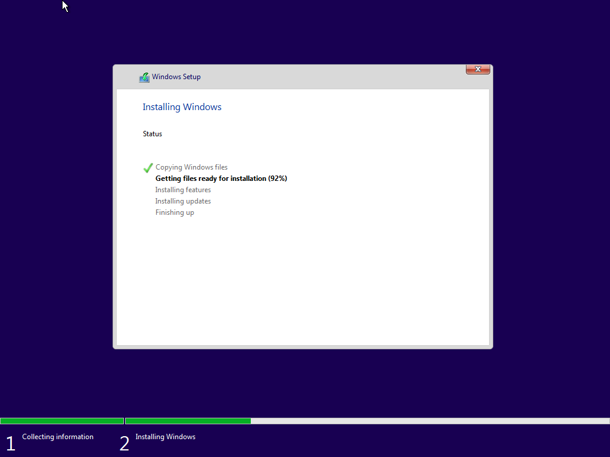
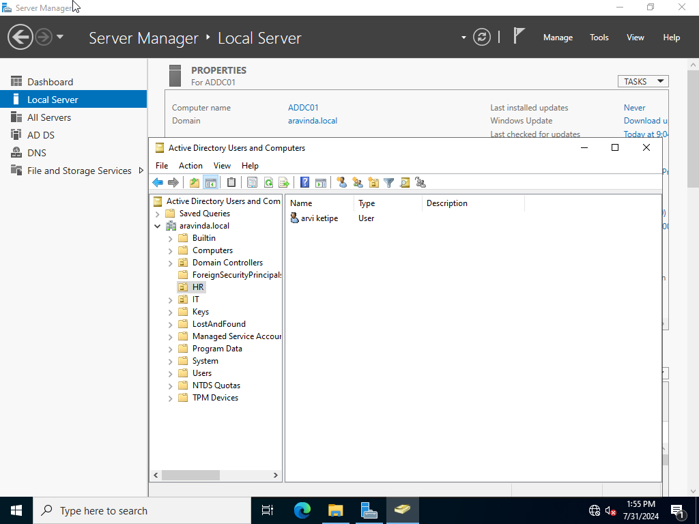

Windows 10 Pro
Downloaded a Windows 10 Pro ISO from the Microsoft and installed. Changed the PC name, network settings to match the NAT Network used for the project, downloaded Sysmon64 and installed with olaf config file, downloaded splunk forwarder and installed with the right host IP and port number

Windows Server 2022
Downloaded and installed the iso file downloaded from the Microsoft Official website. Configured the network settings including, giving a static IP, Default gateway, and DNS server IP. Additionally downloaded and installed Sysmon and Splunk Forwarder according to the network topology and listening port
Ubuntu 22.04.4 LTS
Downloaded this iso and added and installed the VM in virtualbox. Changed the static IP and Default Gateway for the server. Installed vboxsf and virtualbox-guest-additions to be able to use Splunk in this Server. Installed Splunk and configured the Ubuntu Server to start Splunk Server when the VM's turned on